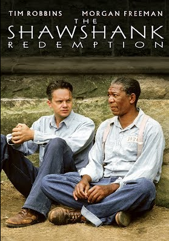
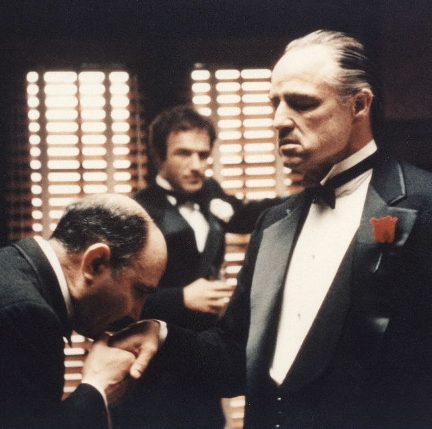
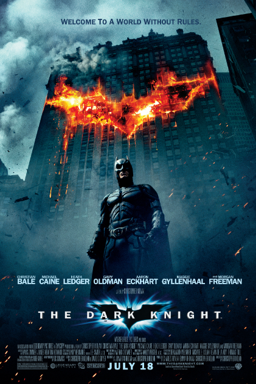
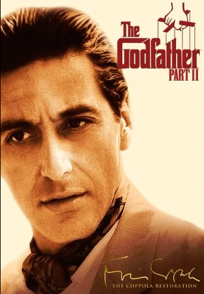

Welcome home, my sweet cinephiles!

Andy Dufresne, a successful banker, is arrested for the murders of his wife and her lover, and is sentenced to life imprisonment at the Shawshank prison. He becomes the most unconventional prisoner.
22 September 1994
Frank Darabont

Don Vito Corleone, head of a mafia family, decides to hand over his empire to his youngest son Michael. However, his decision unintentionally puts the lives of his loved ones in grave danger.
24 March 1972
Francis Ford Coppola

After Gordon, Dent and Batman begin an assault on Gotham's organised crime, the mobs hire the Joker, a psychopathic criminal mastermind who offers to kill Batman and bring the city to its knees.
18 July 2008
Christopher Nolan
Oskar Schindler, a German industrialist and member of the Nazi party, tries to save his Jewish employees after witnessing the persecution of Jews in Poland.
4 February 1994
Steven Spielberg

Michael, Vito Corleone's son, attempts to expand his family's criminal empire. While he strikes a business deal with gangster Hyman Roth, he remains unaware of the lurking danger.
20 December 1974
Francis Ford Coppola
A dissenting juror in a murder trial slowly manages to convince the others that the case is not as obviously clear as it seemed in court.
April 1957
Sidney Lumet